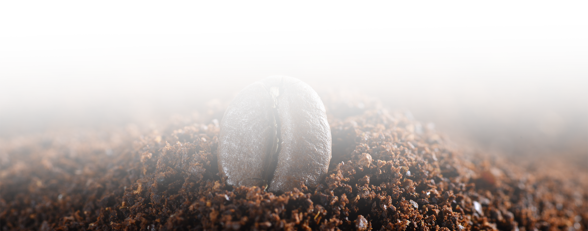
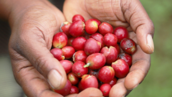
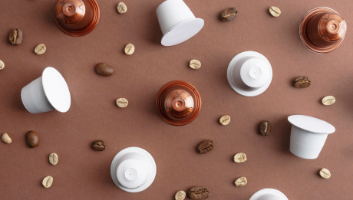
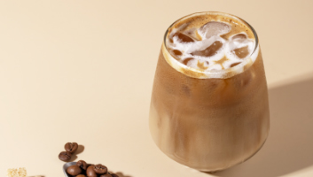
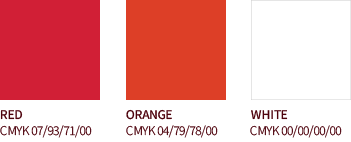

Are you curious
about NUTTY?
NUTTY는 혁신, 열정과 전문성으로 탄생된 아주 특별한 커피 브랜드입니다.
Nutty의 사전적 의미는 '견과 맛이 나는', '정상이 아닌', '미친 것 같은', '홀딱 반한'등 여러가지가 있습니다.
또 커피 용어로 해석하자면 '커피를 추출할 때 나는 고소한 향'입니다. 이 중 상반되는 단어들을 조합하여 이중적인 의미를 가질 수 있도록
'홀딱 반할 정도로 고소하고 맛잇는 커피'라는 브랜드 뜻을 만들었습니다.
그 이름에 걸맞는 고품질의 원두를 고품질의 커피 머신으로 뽑고자하여, Nutty는 끊임없는 발전과 연구를 계속하였습니다.
그 결과, 원두와 커피 머신의 조화를 이루는 동시에 창조의 영역을 확장시키는데 헌신함으로써 커피의 역사에 중요한 발자취를 남기고 있습니다.
NUTTY는 그 무엇보다 원두의 질을 가장 중요하게 생각합니다.
NUTTY는 5대륙의 유명하고 순수한 9가지 아라비카로 구성된 블랜드로 커피의 높은 품질과 뚜렷하고 부드러운 맛을 자랑하며 매일
집, 사무실, 호텔, 식당 및 카페에서 수백만명의 사람들을 즐겁게 합니다.
Brand Quality
-

책임있는 소싱
모든 원두는 블렌딩 및 로스팅, 그라인딩 단계를 거치기 전에 세계적인 원산지에서 책임 있는 소싱을 통해 공급됩니다.
-

완벽한 밀봉
특허받은 스마트 캡슐은 본래의 신선함과 향을 그대로 유지하여 만족스러운 완전한 커피 경험을 선사합니다.
-

천천히 음미하는 한 모금
캡슐에서 컵으로 물이 바로 공급되기 때문에 이전 음료의 맛이 남아있지 않은 신선한 음료를 즐길 수 있습니다.
sustainability
우리 모두에게는 지구에 대한 사랑을 보여주는 방법이 있습니다. NUTTY도 마찬가지 입니다.
우리는 지속 가능한 커피 재배 및 생산, 소비를 보장하기 위해 누티 플랜(Nutty Plan)을 시작했습니다.
시행한 작업과 진행 중인 작업, 다음 작업에 대해 자세히 살펴보세요.

C.I Introduction
-
Brand Logo
Nutty의 CI는 브랜드만의 상징성과 이미지를 대표하는 가장 중요한 요소이다. 로고마크의 사용은 컴퓨터 원고 사용을 원칙으로 하고, 부득이한 경우(대형 사인물 등 확대 제작하는 경우)에도 그리드 규정을 준수하여 기본 형태의 오류가 발생하지 않도록 제작한다. 로고마크는 가독성과 주목성을 위해 다른 시각적 요소들로부터 분리된 깨끗한 공간을 유지해야 하며 이를 위해 로고타입의 높이를 기준으로 한 최소 공간 규정을 준수해야 한다.
흑백이나 어두운 배경의 경우 반드시 화이트 로고를 사용함 (다른 색상으로 변경 불가)
-
Brand Color & Font
Nutty의 주요 색상인 레드와 오렌지는 브랜드를 대표하는 색상입니다. 로고와 함께 브랜드 이미지를 전달하는 매우 중요한 요소로써, 대표 색상인 레드를 중심으로 Nutty만의 열정과 아이덴티티를 강하게 이어나가겠다는 굳은 다짐을 보여줍니다. 또 커피하면 떠오르는 단순한 브라운이 아닌 커피 열매를 의미하는 커피 체리를 닮은 레드 계열의 색상들을 적용했습니다.
-
PREMIUM CAPSULE BRAND
Kanit - Bold Italic
PREMIUM CAPSULE BRAND
Noto Sans KR - Regular
Nutty의 굳은 다짐과 강한 열정을 보여주는 굵은 산세리프 형식의 폰트를 사용했습니다. 기울임을 적용하여 산세리프체가 주는 딱딱한 느낌만이 아닌 커피의 부드러운 흐르는 느낌을 표현하여, Nutty의 아이덴티티에 가까운 로고를 완성하였습니다. 로고 하단에 사용 된 노토산스체는 브랜드만의 깔끔한 이미지를 잘 보여줍니다.
TEL 051 245 1650
FAX 051 247 6173
nuttydsigner@gmail.com
부산광역시 중구 중앙대로 26 다원중앙타워 10층

GO TO TOP